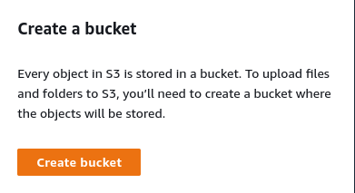
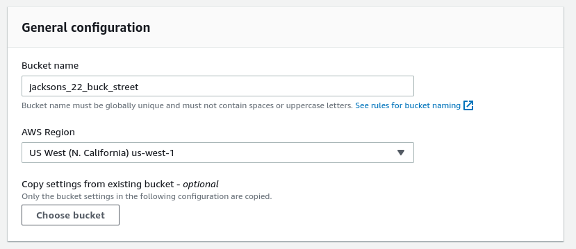
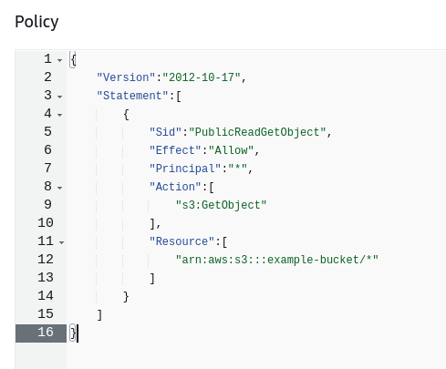

Creating a Storage Bucket
To create a static website, we must begin by creating a bucket. Once you have logged in and can view your AWS Dashboard, click on the search bar and type in "S3". S3 stands for Simple Storage Service, and is the module of AWS that allows you to store data in the cloud!
Step 1 is to navigate to the S3 module page, then select Create Bucket. Give it a unique name, then select the region closest to your current location to minimize latency when accessing the bucket's data. Next, make sure that Block all public access is unchecked, then click Create Bucket at the bottom!
Now we need to update the permissions. Click on the bucket's name, then select the Permissions tab, then go Bucket policy->Edit and past the following in the text box:
{
"Version":"2012-10-17",
"Statement":[
{
"Sid":"PublicReadGetObject",
"Effect":"Allow",
"Principal":"*",
"Action":[
"s3:GetObject"
],
"Resource":[
"arn:aws:s3:::example-bucket/*"
]
}
]
}

Linking to Static Webpage
Create an html file that you would like to upload to AWS on your local machine as index.html. Then, in the AWS window, go to the Objects tab and upload your html file there. Before you move on though, we have to play around with the permissions.
Click on the Permissions tab to view your options. First up is Predefined ACLs, check off Grant public-read access. Next, look at the Properties header, and select the Standard class of storage. Finally, click on Upload at the bottom!
Testing
Under the Properties tab, you should go to Edit->Enable->Index document and enterindex.html. Then press save and scroll down to the Static hosting area, and copy the URL into a new tab. Opening this up will show you your website!